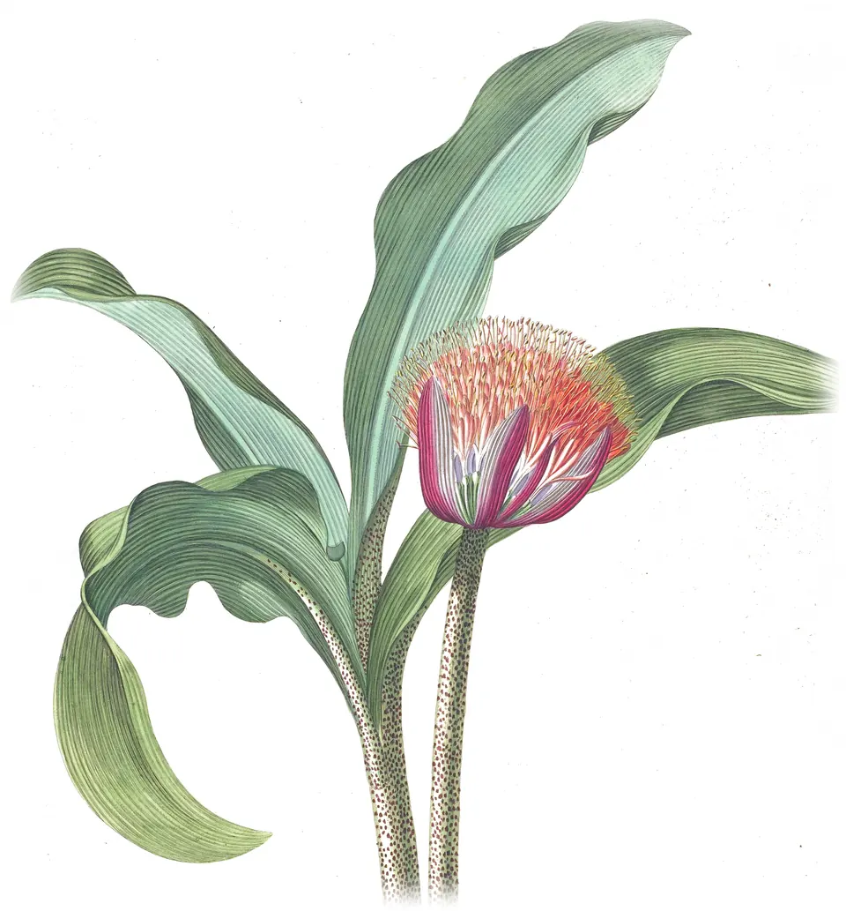
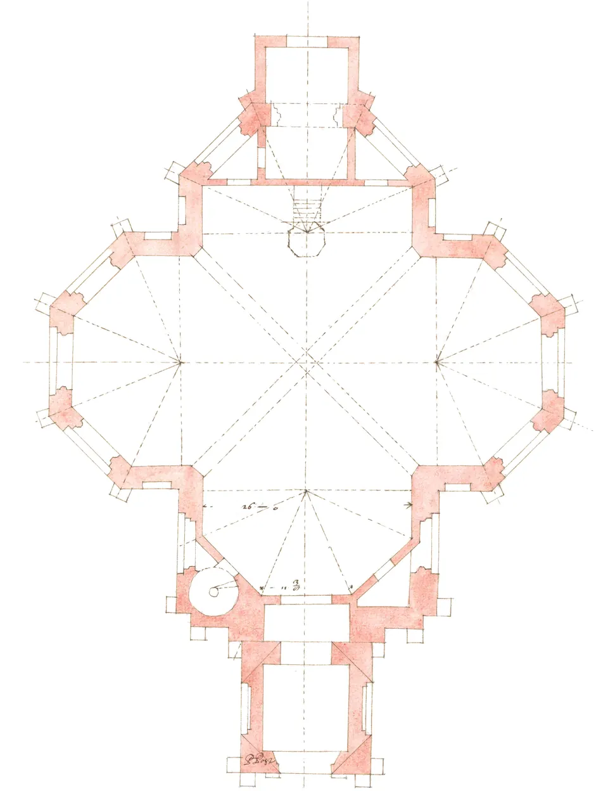
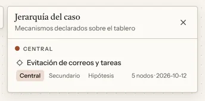
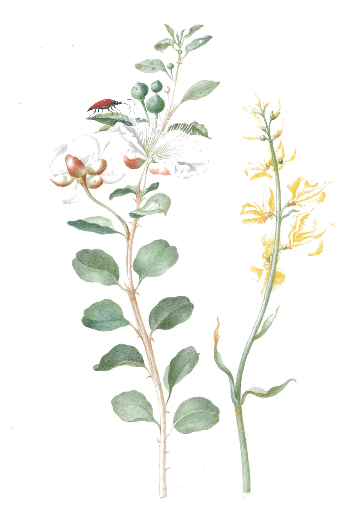
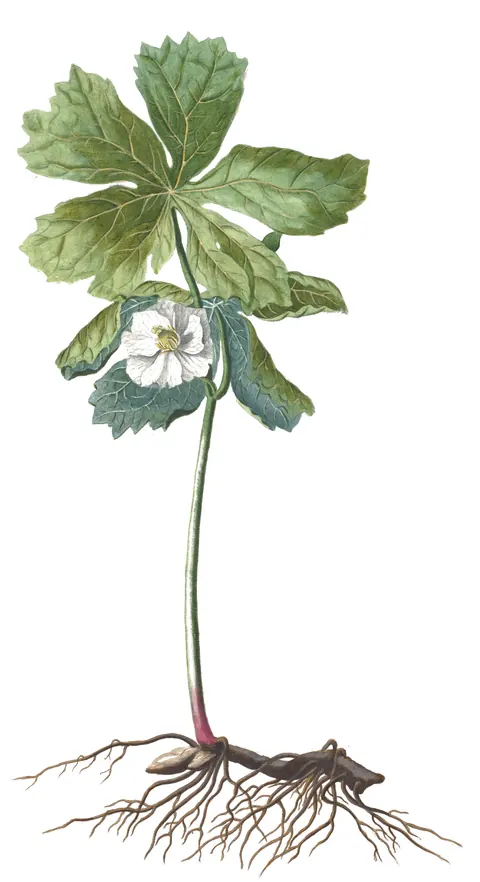

Para terapeutas contextuales · Hecha por Daniel Henríquez, Magíster en Psicología Clínica
¿Ficha en Word, notas en Drive, formulación en la cabeza?
Arkhé junta todo en un lugar y le da a cada caso un tablero para formularlo.
14 días con todo, gratis y sin tarjeta · Después, gratis para siempre hasta 3 pacientes.
La instalación es por videollamada, sin costo. Para Windows · Tus fichas quedan en tu computador.

1Capítulo 1: Formular
Por qué formular
Lo que se queda en la cabeza
Formular un caso es construir hipótesis sobre qué mantiene el problema de esta persona en su contexto: qué antecede a la conducta, qué la sigue y qué función cumple. Es análisis funcional, y casi siempre se hace de memoria, porque no hay un lugar donde dejarlo a la vista.
La terapia basada en procesos propone formular así: como una red de nodos y flechas donde se ve qué mantiene qué. Un tablero sirve para formular de esa manera. Arkhé no aplica ese modelo ni ningún otro, y no formula por ti.
Te da el lugar: un tablero por caso, donde dibujas tu hipótesis y declaras los mecanismos que, a tu juicio, mantienen el problema.
Mira el tablero de un caso ↓El tablero
Un análisis funcional, armándose
Cada caso tiene su tablero, sea de una persona, una pareja o una familia. Escribes tu hipótesis en nodos y los unes con flechas, desde un lienzo en blanco, desde una plantilla o desde un ciclo de mantención frecuente.
Te pongo un ejemplo. En el tablero de Ana, la paciente ficticia de las figuras, el antecedente son los correos pendientes de su jefatura. Aparecen «no soy capaz» y la ansiedad; posterga y evita, y la consecuencia es un alivio inmediato. Ese alivio refuerza la evitación: es un ciclo de evitación mantenido por refuerzo negativo.
Seleccionas los cinco nodos, los declaras como mecanismo de mantención con el nombre «Evitación de correos y tareas» y eliges su nivel: hipótesis, secundario o central.


- Gatillante. Los correos pendientes de la jefatura.
- Pensamiento y emoción. «No soy capaz» y ansiedad 7/10.
- Conducta. Posterga y evita.
- Consecuencia. Un alivio inmediato: evitar alivia.
- La flecha que cierra el ciclo. El alivio refuerza la evitación.
- Mecanismo de mantención. «Evitación de correos y tareas», en el nivel central.
Ver el detalle: tipos de nodo, flechas y niveles
Tipos de nodo. Gatillante, pensamiento, emoción, sensación, atención, conducta, consecuencia, histórico y recurso. Son opcionales: en cada nodo escribes lo que quieras, con tus palabras.
Lo que puede decir una flecha. Refuerza, alivia, evita, confirma, origina, mantiene o compensa. Sin nada, la flecha solo dice que una cosa lleva a la otra.
Niveles. Si no eliges otro, el mecanismo queda en «hipótesis»: una sospecha por explorar, todavía sin evidencia de sesión. Si lo que observas lo respalda, lo subes a central si organiza el caso (el motor, según tu hipótesis actual) o a secundario si mantiene el problema sin organizarlo. Si deja de respaldarlo, lo bajas o eliminas la declaración, y los nodos quedan en el tablero.
Solo se declaran mecanismos de mantención. Lo que podría cambiar el problema lo dibujas con tus palabras en el mismo tablero, y para las fortalezas, los apoyos y las habilidades hay un tipo de nodo propio, «recurso». Nada de eso tiene nivel.
El tablero se trabaja mejor con mouse y teclado.
Para no partir de cero
Parte de un modelo o de un ciclo frecuente
Al crear un caso eliges con qué tablero empieza: en blanco o con una de las dos plantillas que trae Arkhé. Para otros modelos insertas un ciclo.
Cuatro ciclos de mantención, listos para insertar
Con «Mecanismo» eliges uno y entra de una vez, con sus nodos ya conectados, para ajustarlo al caso: mantención por contingencia, evitación experiencial, decisiones emocionales o confirmación de creencia.
Ver el detalle: qué trae cada ciclo
- Mantención por contingencia. Una conducta y su consecuencia en círculo: la consecuencia refuerza la conducta.
- Evitación experiencial. Evitar o escapar del malestar, o de lo que lo gatilla, alivia de inmediato, y ese alivio refuerza la evitación.
- Decisiones emocionales. Actuar el impulso se refuerza a corto plazo y trae más emoción negativa después.
- Confirmación de creencia. La creencia guía la conducta y el resultado la confirma.
Material de estudio
En «Estudio» vienen más de veinte notas de conceptos: análisis funcional de la conducta, contingencias, condicionamiento clásico, conductas clínicamente significativas e historia del aprendizaje, y también de terapia cognitiva. Son archivos tuyos: las editas, agregas las propias y las enlazas desde un nodo del tablero.
Sesión a sesión
Una pregunta al registrar cada sesión
Registras la sesión y, si ya declaraste mecanismos en el tablero, Arkhé te hace una sola pregunta: «¿Qué mecanismos indagaste?». Marcas los que la sesión tocó, sea para explorarlos o para trabajarlos. Si no usas los mecanismos, Arkhé no te pregunta nada.
Si un mecanismo central lleva tres sesiones sin que lo marques, Arkhé te lo recuerda en la jerarquía del caso (la Fig. 1) y te sugiere llevarlo a la próxima sesión o, si ya no organiza el caso, actualizar su nivel.
Ver el detalle
- La pregunta aparece al registrar la sesión en el computador, no en la tablet.
- Lo que marcas sirve para ese aviso. No hay una vista con el historial sesión por sesión.
- Lo que dibujas en el tablero sin declararlo como mecanismo, como los recursos, no entra en la pregunta ni en el aviso.
- Mientras escribes la ficha o la nota, a la derecha tienes la síntesis de la formulación, con los nodos y las flechas del tablero de ese paciente. Se ve con la ventana de Arkhé maximizada; los mecanismos y su nivel se ven en el tablero.
- Si anotas en Arkhé tus reuniones de supervisión, cada acuerdo que asignas a un caso tuyo vuelve a su expediente como recordatorio.

2Capítulo 2: Tu consulta
La hice para mi consulta
Soy Daniel Henríquez, psicólogo clínico en Chile. Mi práctica vivía repartida: la ficha en Word, las notas en Drive, la agenda en otra parte, las boletas en el SII y la formulación en la cabeza. Construí Arkhé, nota 1 para mí y la uso todos los días con mis pacientes., nota 2
Terminas la última sesión. Abres el Word de la ficha, buscas en Drive la nota de la semana pasada, miras la agenda y dejas la boleta para mañana. El caso lo piensas después, si queda tiempo.
Daniel Henríquez, Magíster en Psicología Clínica
- 1Arkhé (ἀρχή), en griego: principio, origen.
- 2Las pantallas de esta página son de una paciente ficticia.

Boletas, ficha, notas y agenda
Lo administrativo, en su lugar
Antes: «Las boletas en el SII»
Ahora Arkhé emite tus boletas de honorarios
Lo hace en el sitio del SII, desde tu computador, con los datos que ya están en la ficha del paciente.
- La primera boleta de cada paciente la emites tú, guiada. Arkhé abre el SII en una ventana propia y llena los datos del paciente, la glosa y el monto. Tú entras con tu clave, revisas la boleta y aprietas «Emitir». Con eso Arkhé aprende el camino de ese paciente.
- Desde la segunda, marcas la sesión como pagada y la boleta sale. El botón lo dice, «Marcar pagada y emitir boleta», y no hay otra confirmación.
- A fin de mes puedes emitir varias de una vez desde Administración, después de revisar la lista.
Antes de emitir, Arkhé compara el borrador del SII con el RUT, el monto y la fecha. Si algo no calza, o si aparece una página que no conoce, se detiene sin emitir y te deja la ventana. El PDF de cada boleta queda en la carpeta del paciente.
Ver el detalle: la clave del SII, los límites y lo que sigues haciendo tú
- Lo que llena. El RUT, el nombre, la dirección, la comuna y el correo del paciente, tomados de su ficha, más la glosa y el monto de la sesión. En el lote ves antes cada paciente, su fecha, su monto y el total.
- Tu clave del SII. Guardarla es opcional. Si no la guardas, te identificas tú en la página del SII cada vez. Si la guardas, queda solo en el Administrador de credenciales de Windows de ese computador: no en tus fichas, ni en los respaldos, ni en la tablet, ni en la nube. Arkhé la escribe únicamente en la página de ingreso del SII, y quien use tu sesión de Windows podría emitir boletas con ella.
- Si el SII pide un código o un captcha, Arkhé no escribe la clave y te deja la ventana. Si el SII rechaza la clave guardada, no la vuelve a intentar.
- Sin boletas duplicadas. Si Arkhé no alcanza a ver que una boleta salió, la deja «Por revisar en el SII» y te pregunta. Una boleta que pudo haber salido nunca se vuelve a emitir sola.
- Arkhé no anula boletas. Si marcaste un pago por error y la boleta salió, se anula en el SII.
- Paciente sin RUT en la ficha. Su boleta no sale sola. La emites guiada, y ahí puedes elegir no identificar al receptor.
- Envío al paciente. Si lo activas para un paciente, la boleta se le envía con el botón «Enviar boleta por e-mail» del propio SII, al correo de su ficha.
- Solo en el computador con Windows, y con Arkhé abierta. La tablet no emite boletas.
- No es un servicio del SII. Arkhé trabaja sobre la página del SII, igual que tú. Si el SII cambia su sitio, ese paciente vuelve a la emisión guiada hasta que Arkhé aprenda de nuevo.
- Solo boletas de honorarios, con una glosa y un monto por boleta. No emite facturas.
- Si prefieres emitirlas por tu cuenta, sigues pudiendo: cada sesión queda con su boleta pendiente y la marcas como «Emitida» cuando la hagas.
Antes: «La ficha en Word»
Cada caso nace con su ficha, hecha con la plantilla de su tipo de proceso: adulto, infanto-juvenil, pareja, familia o grupo. Si quieres tu propio formato, ajustas la plantilla una vez y sirve para los que vengan.
Ver la ficha de Ana
Las supervisiones que haces a colegas también tienen su ficha.
Antes: «Las notas en Drive»
Terminas la sesión, la registras desde su cita en la agenda y Arkhé crea su nota, numerada y con su fecha, en la carpeta del paciente. En el expediente ves todas sus sesiones, con su honorario y su boleta, y desde cada una abres su nota.
Antes: «La agenda en otra parte»
Arkhé te muestra tu semana hora por hora, de lunes a domingo. Desde cada cita registras la sesión con los datos ya puestos.
Antes: «El certificado, desde cero en Word»
Sale como borrador desde el expediente, con el nombre, el número de expediente, el número de sesiones y el período ya puestos. Lo mismo con los informes de avance, de alta y para COMPIN (el de COMPIN, sin el período). Lo clínico lo escribes tú.
- Arkhé no cobra a tus pacientes. Tú marcas cada sesión como pagada, y en Administración «Ingreso» suma los honorarios de las sesiones del mes.
Si un paciente está en riesgo
Hay sesiones en que dejas para después lo que tenías planeado, porque tu paciente está en riesgo. Para esas, esto queda a mano en Arkhé.
Alertas clínicas
Las escribes tú, con su severidad (crítica, importante o informativa), y quedan a la vista en el expediente y en el panel de la derecha, en el computador.
Derivación a urgencias
Escribes la comuna (o Arkhé la toma de la ficha) y te propone centros con urgencia de salud mental. Arma un borrador con los datos de tu paciente para que completes el motivo y el traslado y lo firmes.
Antes de derivar, confírmalo con el centro.
Ver el detalle: de dónde salen los centros
Los centros vienen de datos del DEIS (MINSAL) de enero a agosto de 2026, que vienen en la app. Esos datos no dicen si hay cupo ni si el centro recibe a pacientes de su edad. Los teléfonos de los centros vienen del mismo registro y no están verificados. El tiempo de traslado es una estimación desde el centro de la comuna, no una ruta desde el domicilio.
Red de colegas
Anotas a tus colegas con su especialidad, su orientación, el tipo de casos que les envías y, de 1 a 5, tu confianza para derivarles. Cuando necesitas derivar, los buscas por especialidad o por tipo de caso.
Arkhé no evalúa el riesgo ni lo detecta en tus notas. Esa evaluación es tuya.
Sigue: tus datos ↓3Capítulo 3: Tus datos
Sin rehenes
Si dejas de pagar, tus fichas se quedan contigo.
Si dejas de pagar, o al terminar la prueba, sigues en el plan Gratis: 3 pacientes activos, con todo, y el resto en pausa, en modo lectura, sin plazo y sin borrar nada. A los pacientes en pausa los lees, los exportas y los imprimes, y vuelven al instante si te suscribes.
Para leer tus fichas y notas ni siquiera necesitas a Arkhé. Son archivos de texto en una carpeta de tu computador y se abren hasta con el Bloc de notas.
Ver el detalle: formatos y exportaciones
- Las fichas y las notas son Markdown; el tablero, JSON Canvas, un formato abierto que otros programas también leen. En ellos se ven los textos y las flechas, pero los tipos y los mecanismos solo los muestra Arkhé.
- La exportación de cada expediente trae la ficha, las notas y el registro de sesiones; la formulación queda en su propio archivo.
- Imprimes o guardas en PDF tus fichas y notas, y exportas la agenda a un archivo de calendario (.ics).
- El respaldo completo copia todo: fichas, notas, tableros, sesiones, boletas y agenda.
- Pacientes
- Ana Ejemplo (muestra)
- 000_Ficha_Ana Ejemplo (muestra).md
- Tablero.canvas
- Sesiones
- 2026-09-28 — Sesión 1.md
- 2026-10-05 — Sesión 2.md
- 2026-10-12 — Sesión 3.md
- 2026-10-19 — Sesión 4.md
- 2026-10-26 — Sesión 5.md
- 2026-11-02 — Sesión 6.md
- Boletas
- Historial
- Ana Ejemplo (muestra)
Trae tu lista de pacientes
Con «Traer mi práctica», en el computador, son dos pasos, y el segundo es opcional. Si prefieres, lo hacemos juntos en la instalación guiada.
- Pegas tu lista de pacientes, un nombre por línea (sirve una columna copiada de Excel). Eliges una vez el tipo de proceso y el arancel para todos, y Arkhé crea un expediente con su ficha para cada uno.
- Si quieres el historial de cada paciente junto a su ficha, eliges la carpeta con tus registros antiguos, o el .zip que descargas de Drive o de Notion. Tú confirmas a qué paciente va cada archivo, y tus originales quedan intactos.
Ver el detalle: qué se conserva de cada archivo
- La ficha de cada paciente parte con el nombre; el RUT, el teléfono y lo demás los agregas después.
- Cada Word (.docx) se convierte en una nota de texto, en tu mismo computador, y queda en la carpeta «Archivo previo» de ese paciente, así que entra en el respaldo completo.
- Por ahora «Archivo previo» no se ve dentro de Arkhé, ni en el expediente ni en la búsqueda. La abres desde el Explorador de Windows y lees sus notas con el Bloc de notas u otro editor de texto.
- Del Word se conservan el texto, los títulos hechos con los estilos de Word, las listas, la negrita y la cursiva. Las tablas llegan como párrafos sueltos y las imágenes quedan metidas dentro de la nota como una línea larga de letras y números; se pierden el encabezado, el pie de página, el subrayado y los colores.
- Los .doc antiguos, los PDF y las planillas entran como adjuntos, sin convertir.
- Arkhé no se conecta a tus cuentas de Drive ni de Notion. Trabaja con los archivos que descargas.
4Capítulo 4: Precio
Primero la pruebas. Después decides.
Lo que pagas es el tamaño de tu consulta, no las funciones.
Al pagar tienes las mismas funciones que en la prueba y que en el plan Gratis. Tu precio no sube: si el precio de lista aumenta, conservas el tuyo ($19.990 al mes o $199.900 al año) mientras tu suscripción siga sin cortes.
- Los precios incluyen IVA. Pagas con Mercado Pago; Arkhé no ve ni guarda los datos de tu tarjeta.
- Si tus pacientes no reservan ni pagan por internet y no les mandas recordatorios automáticos, no necesitas pagar otra herramienta.
Centros y equipos
Si diriges un centro o un equipo, escríbeme y vemos si Arkhé les sirve.
Descarga e instalación
La instalamos juntos
Es el camino que recomiendo. Coordinamos una videollamada sin costo y la dejamos instalada en tu computador, con tu lista de pacientes adentro. No necesito ver tus fichas.
Escríbeme por WhatsAppO instálala por tu cuenta
Arkhé se instala en un computador con Windows. Si estás en el celular, mándate esta página para abrirla en tu computador.
Mandármela por correo Descargar para WindowsPesa unos 5 MB. Al abrirla, eliges dónde crear tu Espacio Clínico, la carpeta donde quedarán tus fichas. La prueba de 14 días empieza la primera vez que la abres, sin crear una cuenta.
Ver el detalle: la paciente de muestra, el aviso de Windows y Mac
Antes de traer a tus pacientes, puedes probarla con una paciente ficticia que ya viene incluida y una guía corta. Su tablero es más simple que el de las figuras de esta página.
La primera vez, Windows avisa «Windows protegió su PC» porque el instalador todavía no tiene la firma digital de Windows. Haz clic en «Más información» y luego en «Ejecutar de todas formas». Arkhé se instala solo en tu usuario, sin pedir permisos de administrador.
Para Mac no hay instalador de la versión actual. Si usas Mac, escríbeme igual. Me sirve saber cuántos colegas la necesitan.
5Capítulo 5: Preguntas
Preguntas frecuentes
Tu forma de trabajar
¿Sirve si no trabajo desde ACT o DBT?
Sí. No necesitas trabajar con un modelo en particular. Los tipos de nodo y de flecha son opcionales, igual que declarar mecanismos, y en los nodos escribes lo que quieras, con tus palabras. Puedes partir de un lienzo en blanco.
La página les habla a quienes trabajan desde las terapias contextuales porque el tablero está pensado para formular por la función: qué mantiene qué. Si formulas de otra manera, pruébala y mira si te acomoda.
¿Arkhé formula por mí o usa inteligencia artificial con mis notas?
No. Arkhé no formula, no evalúa y no usa inteligencia artificial con tus notas ni con tu tablero, y no los manda a ningún servicio de IA. Te da un lugar para formular; la hipótesis es tuya.
¿Mis pacientes pueden reservar o pagarme por internet?
No. Arkhé no tiene reservas hechas por tus pacientes, no les cobra en línea y no les manda recordatorios automáticos. Está hecha para la consulta de psicoterapia, donde la mayoría de los pacientes viene en un horario fijo: agendas tú y, desde la cita, registras la sesión, su nota y su honorario. Si tu consulta depende de que te reserven por internet, hoy Arkhé no te sirve para eso.
Lo que sí se paga en línea es tu suscripción a Arkhé.
Ya pago un software de agenda. ¿Por qué cambiarme a Arkhé?
Los programas de agenda están hechos para vender horas. Arkhé está hecha para el trabajo clínico. Tienes un tablero para formular cada caso, con la pregunta por los mecanismos al registrar la sesión, y la ficha y la nota de cada sesión. Además, la agenda, los honorarios, las boletas del mes y los certificados e informes como borrador. Si tus pacientes no reservan ni pagan por internet, con Arkhé no necesitas pagar otra herramienta. Para saber si es tu caso está la prueba.
Word y Drive me salen gratis. ¿Por qué pagaría Arkhé?
Porque junta lo que hoy abres por separado. Cada caso tiene su tablero para formularlo. En el expediente de cada paciente ves su próxima cita, sus sesiones con el honorario, la boleta y la nota de cada una, y sus alertas. Registras la sesión y su nota queda creada, numerada y con su fecha. Marcas la sesión como pagada y su boleta sale. El certificado y los informes de avance, de alta y para COMPIN salen como borrador, con el nombre, el número de expediente y el número de sesiones ya puestos.
No te puedo decir cuánto tiempo te ahorra en tu consulta. Pruébala 14 días. Y si atiendes a pocos pacientes, el plan Gratis puede bastarte.
¿Puedo ver mis citas en Google Calendar?
Desde el computador, cada cita que agendas en Arkhé se puede agregar a Google Calendar con un título discreto, el número de expediente («Sesión 028»), sin nombre ni notas. Si después la mueves en Arkhé, en Google tienes que moverla a mano, porque no se sincronizan. También puedes exportar la agenda a un archivo de calendario (.ics).
Boletas
¿Arkhé emite mis boletas de honorarios?
Sí, en el sitio del SII y desde tu computador con Windows. La primera boleta de cada paciente la emites tú, guiada: Arkhé abre el SII, llena los datos del paciente y tú aprietas «Emitir». Desde la segunda, marcas la sesión como pagada y Arkhé emite su boleta, sin otra confirmación. También puedes emitir varias de una vez desde Administración.
Antes de emitir, Arkhé comprueba que el borrador del SII calce con el RUT, el monto y la fecha. Si algo no calza, se detiene y te deja la ventana. Arkhé no anula boletas: eso se hace en el SII.
Lleva una boleta por sesión. Si prefieres emitirlas por tu cuenta, cada sesión queda con su boleta pendiente y la marcas como emitida. El detalle está en «Ahora Arkhé emite tus boletas de honorarios».
¿Tengo que darle a Arkhé mi clave del SII?
No. Guardarla es opcional. Si no la guardas, te identificas tú en la página del SII cada vez que emites. Si la guardas, queda solo en el Administrador de credenciales de Windows de ese computador y Arkhé la escribe únicamente en la página de ingreso del SII. No sale de tu computador hacia ningún otro lugar, pero quien use tu sesión de Windows podría emitir boletas con ella.
Tus datos
¿Dónde quedan mis datos? ¿Necesito internet?
En tu computador, en la carpeta que elijas: las fichas y las notas como archivos de texto, y cada tablero en su propio archivo. La agenda y el registro de sesiones también quedan en el equipo. Para trabajar no necesitas internet, y para probar Arkhé no necesitas crear una cuenta.
Arkhé para Windows sale a internet por sí sola nada más que para buscar actualizaciones, y en esa consulta no manda datos de tu práctica. Lo demás pasa solo si tú lo usas: si conectas tu Google Calendar, lo lee al abrir Arkhé y cada 10 minutos; si emites una boleta, sus datos se escriben en el sitio del SII; y si pagas la suscripción, entras con una cuenta de Google donde queda tu licencia (tu correo, tu nombre y tu plan), no tus fichas. No mide cómo usas la app ni manda reportes de errores.
De la conexión con el SII se guarda, en tu computador, el número y el PDF de cada boleta y el camino que Arkhé aprendió para cada paciente. Tu clave no se guarda, salvo que tú lo pidas.
Arkhé no cifra esos archivos, igual que hoy tus Word no se cifran solos. Protégelos con el cifrado de disco de Windows: BitLocker en Windows Pro, o «Cifrado de dispositivo» en Windows Home si tu equipo lo trae. Y elige una carpeta fuera de OneDrive, Google Drive o Dropbox si no quieres que esos servicios la suban. En muchos equipos, Documentos y Escritorio ya están dentro de OneDrive, y Arkhé no te avisa.
La tablet se sincroniza directo con tu computador por tu Wi-Fi, sin pasar por internet. Para vincularla, pegas en la tablet el texto del QR que te da el computador. También se puede escanear el QR con la cámara, pero esa vía todavía la estoy probando, y usa un lector de Google que la primera vez puede necesitar internet.
¿Y si pierdo o se daña mi computador?
Arkhé no guarda copias fuera de tu computador por su cuenta. Si hoy tus notas están en Drive, ahí se respaldan solas. Con Arkhé el respaldo lo haces tú, y conviene hacerlo cada semana. Con «Respaldar ahora» copias todo (fichas, notas, tableros, sesiones, boletas y agenda) a un disco externo o a otra carpeta, también una de tu Drive, y si pasa un mes sin respaldo, Arkhé te lo recuerda. Ese respaldo no va cifrado, igual que hoy tus notas en Drive.
¿Qué pasa al terminar la prueba?
Tres días antes, Arkhé te avisa. Al terminar, eliges tus 3 pacientes activos; si no eliges, quedan los 3 con sesiones más recientes. Los demás quedan en pausa: los lees, los exportas y los imprimes, y no se borra nada. Dar de alta a un paciente libera un cupo.
Si te suscribes, todos vuelven al instante.
¿Qué pasa si dejo de pagar?
Si dejas de pagar, o al terminar la prueba, sigues en el plan Gratis: 3 pacientes activos, con todo, y el resto en pausa, en modo lectura, sin plazo y sin borrar nada.
¿Y si un día Arkhé deja de existir?
Tus fichas y notas siguen en tu computador, como archivos de texto que se abren sin Arkhé, y el respaldo copia todo. Arkhé se abre sin internet.
Pagar e instalar
¿Cómo pago?
En arkheapp.cl/pagar, con Mercado Pago. Entras con tu cuenta de Google, eliges el plan y pagas en la página de Mercado Pago; Arkhé no ve ni guarda los datos de tu tarjeta. La licencia se activa sola en tu cuenta, normalmente en minutos, y te llega la confirmación al correo.
El plan anual es un pago único de $199.900: no se renueva solo. El mensual es una suscripción: Mercado Pago cobra $19.990 cada mes hasta que la canceles, y cancelar no tiene costo.
Puedes arrepentirte dentro de 10 días corridos y te devuelvo todo. El detalle está en las condiciones de compra. Si prefieres pagar por transferencia, escríbeme por WhatsApp.
¿Funciona en Mac o iPad, o en una tablet?
Hoy Arkhé se instala en Windows de 64 bits. Para Mac no hay instalador de la versión actual. En iPad y iPhone no hay app.
Si usas Mac, escríbeme igual. Me sirve saber cuántos colegas la necesitan.
Si además de tu computador con Windows tienes una tablet Android con lápiz, en ella escribes a mano la hoja de cada sesión, registras la sesión del día y lees tus casos. Está probada en tablets Samsung Galaxy Tab con S Pen. Si piensas comprar una, escríbeme antes. En la tablet la ficha se lee pero no se edita, los mecanismos se declaran en el computador, las alertas no aparecen y no se emiten boletas. Al registrar una sesión en la tablet, Arkhé no hace la pregunta de mecanismos, y esa sesión cuenta como no indagada para el aviso. Se sincroniza con tu computador por tu Wi-Fi cuando tú lo pides, y esa parte todavía la estoy probando. Si traes Word con fotos, avísame antes de vincular la tablet, porque una nota muy pesada puede trabar la sincronización. Las hojas que escribes a mano en la tablet se ven solo en Arkhé.
Windows me advierte al instalar. ¿Es normal?
Sí. La primera vez, Windows avisa «Windows protegió su PC» porque el instalador todavía no tiene la firma digital de Windows. Haz clic en «Más información» y luego en «Ejecutar de todas formas». Arkhé se instala solo en tu usuario, sin pedir permisos de administrador. Después, cada actualización viene firmada por mí, y Arkhé comprueba esa firma antes de instalarla. Descárgala solo desde esta página. Si prefieres no hacerlo por tu cuenta, lo hacemos juntos en la instalación guiada.
Que la clínica vuelva a estar al centro
Escríbeme y la instalamos juntos
Si quieres probarla en tu consulta, coordinamos una videollamada sin costo y la dejamos instalada en tu computador, con tu lista de pacientes adentro. No necesito ver tus fichas. Si solo tienes una pregunta, escríbeme igual.
Daniel Henríquez, Magíster en Psicología Clínica
Escríbeme por WhatsAppo escríbeme desde tu celular al +56 9 4410 2485
